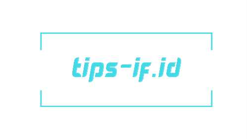

Tips-IF
Tips IF adalah sebuah blog yang memberikan informasi mengenai cara, tips, trik, dan tutorial disegala aspek kehidupan. Tips-IF merupakan anak dari blog IF, bisa dikatakan pula Tips IF merupakan sebuah cabang dari blog IF. Pemilik dari Blog IF adalah Imam Firdaus. Blog IF merupakan sebuah induk blog yang membahas berbagai macam topik, mulai dari pendidikan, teknologi, sampai pemrograman dan masih banyak lagi yang lainnya.
Blog ini mulai ada sejak tahun 2016. Namun karena kesibukan studi penulis akhirnya blog ini agak menjadi terbengkai sampai akhirnya tidak konsisten dalam memposting artikel. Namun sejak adanya perubahan domain dari www.tips-if.blogspot.com ke www.tips-IF.id akhirnya kami mulai aktif kembali dengan semangat pembaruan yang diawali dengan perubahan domain tersebut sampai ke perubahan tampilan.